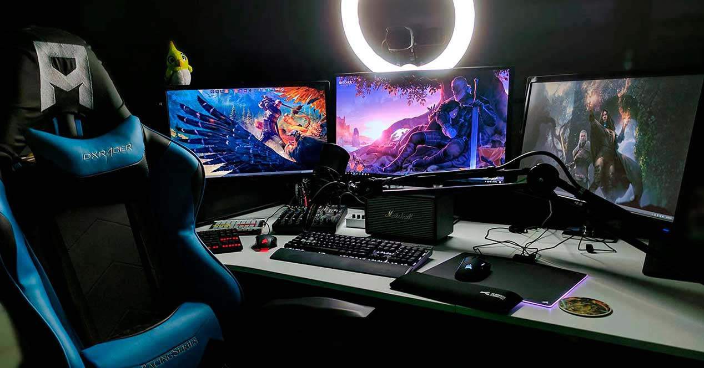

Perifericos
Los perifericos son dispositivos de hardware que sirven para que el usuario pueda interactuar con la la computadora. Los principales dispositivos perifericos son el Mouse y teclado, estos dispositivos permiten que e que el usuario pueda interactuar con el computador y su interfaz. El teclado es un dispositovo de hardware que contiene una estructura que permite al usuario digitar palabras y comandos para que el computador pueda interpretar y ejecutar.
En la actualidad los dispositivos perifericos son diseñados para brindar una mayor precision y ergonomia a los usuarios, se desarrollan dispositivos especializados para juegos los cuales permiten tener un mayor control en el puntero y los juegos.
